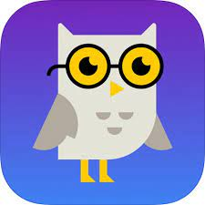
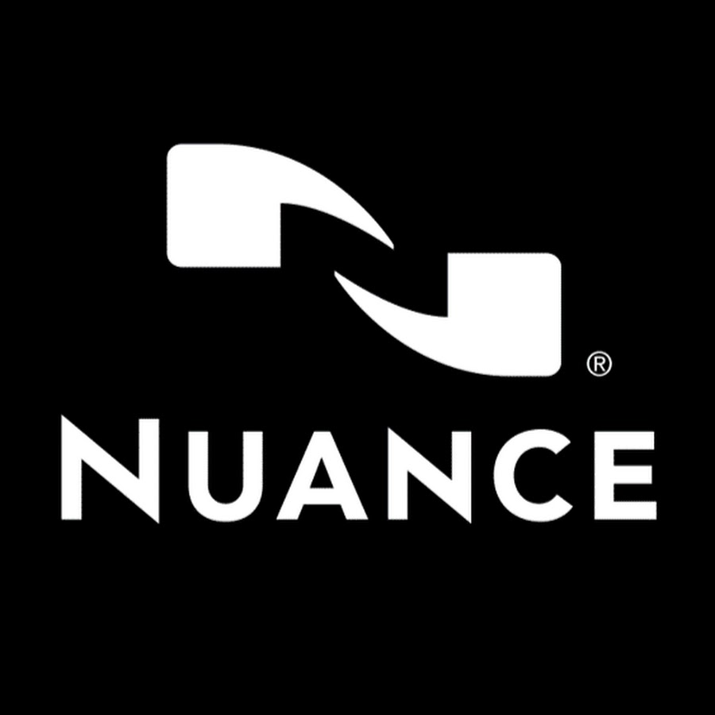

date 20/8/2023
AI tool for productivity
Hello everyone
My name is Naman,
I Would like to ask you a question "How many of you guys use AI tool ?"
well, at present AI Is developing a rapid pace.
With one click you can do the work with take several days to complete
So who doesn't use AI tools, Be it any field we use AI tools
I I would like to discuss some interesting here tools which would help students in their daily life
- Socratic

ai is an AI-powered learning platform that uses the Socratic method to help students learn.
It provides students with curated learning resources and personalized feedback from a virtual tutor.
Socratic-ai is still under development,
but it has the potential to make learning more personalized, engaging, and effective.
2)Tutor.ai
tutor.ai is another great piece of software to help you with the content of your learning.
Students can literally ask Tutor.ai questions and the AI generates detailed answers and
explanations for a range of topics. For better grades, make sure to use Tutor.ai alongside
the MyStudyLife study app—it’s like having your own AI tutor right within your study management tool,
giving you personalized assistance and guidance to ace your academic journey!
Nuance

Nuance is all about voice recognition. Particularly helpful for students
who struggle with writing or typing, Nuance utilizes a ‘Dragon Speech Recognition’ tool
which transcribes up to 160 words per minute! This means accurately dictating essays,
lesson plans, exercise sheets, and more, at a speed more than 3 times faster than typing!
Save yourself some time this school year and try Nuance on your school laptop.
That's all for today to know more stain touch